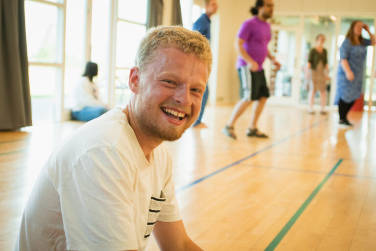

Om SIND
SIND Frivillig er for unge, der vil være en del af et fællesskab, hvor man gør en forskel sammen.
Vi arbejder for mere åbenhed, nærvær og tryghed omkring mental trivsel - både for dem, vi møder, og for de frivillige, der er med.
Hos os handler frivillighed ikke om at kunne alt på forhånd, men om at være til stede og bidrage med det, man kan.
Kom med en dag som SIND frivillig
Følg med bag kulissen og mærk stemningen, relationerne og de små øjeblikke, der betyder noget. Videoen viser dig præcis, hvad du bliver en del af.
Hvilken rolle passer til dig?
Uanset om du er til samtaler, aktiviteter eller praktiske opgaver — her kan du se, hvad du kan bidrage med.
Bestyrelsesarbejde
Vær med til at forme SINDs arbejde og tage del i vigtige beslutninger.
Arrangementer og events
Planlæg og deltag i sociale arrangementer, oplæg og fællesskabsaktiviteter.
Bisidder i møder med kommunen
Støt andre ved at deltage som bisidder i vigtige møder og samtaler.
Besøgsven
Skab nærvær og tryghed gennem faste, uformelle besøg hos mennesker, der har brug for selskab.
Telefonrådgivning
Giv støtte og vejledning til mennesker, der har brug for nogen at tale med.
Flere roller kræver oplæring eller kurser
Nogle roller kræver oplæring eller kurser, som organiseres af SINDs landsorganisation.